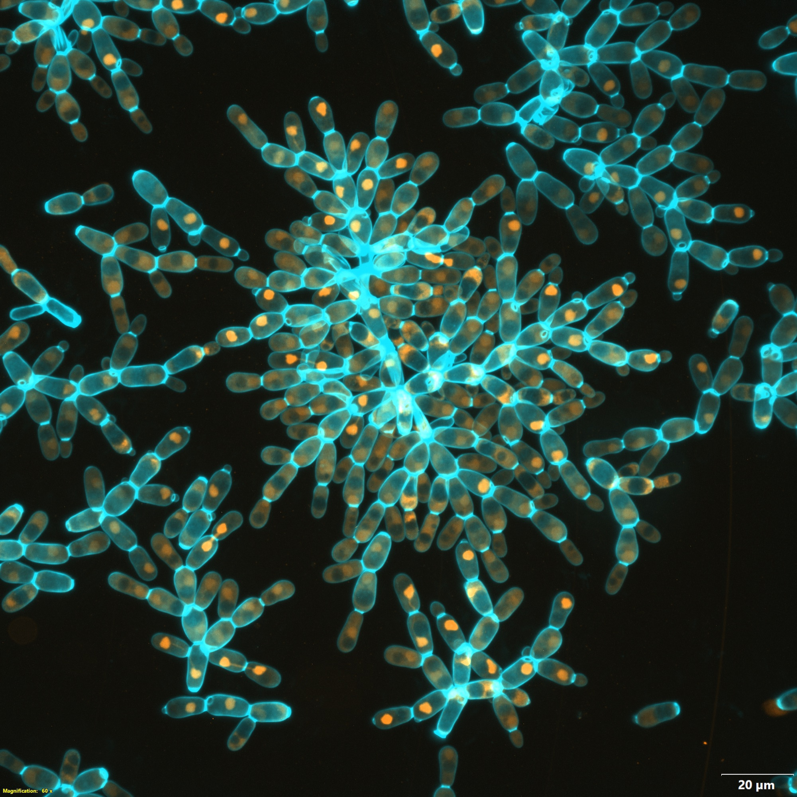
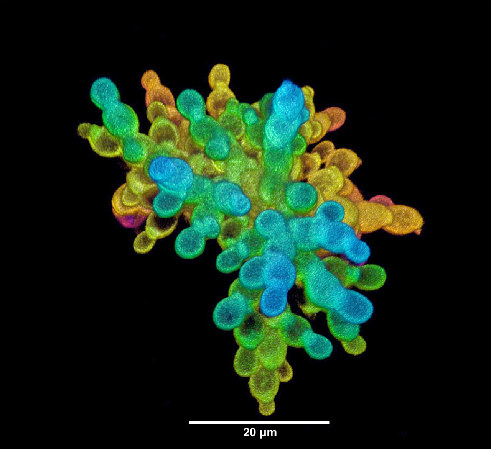
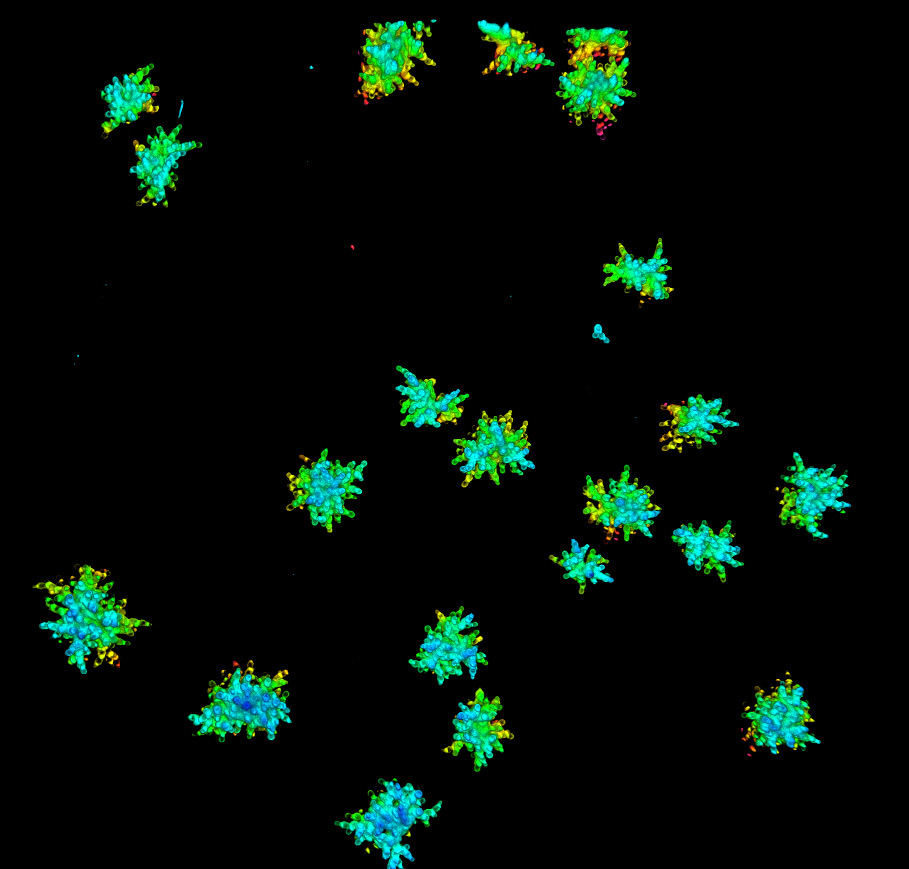

Each day the yeast grow, the culture is left to settle, and only the clusters
that reach the bottom first are moved into fresh medium. This is the only selection we
impose, and it is the same for all fifteen populations in three metabolic environments.
The organism
What a snowflake yeast is
Baker's yeast, Saccharomyces cerevisiae, reproduces by budding. A daughter cell
swells off the side of a mother, and when mitosis is finished an enzyme dissolves the
septum at the bud neck so the two cells come apart. Snowflake yeast are what happens when
that last step fails. Mother and daughter stay joined, the daughter buds in turn, and the
cluster grows outward from one founding cell into a branched, roughly radial body.
Because the cluster is built by cells staying attached after division rather than by
free-living cells finding each other, every cell in it carries the same genome. This is
clonal multicellularity, and it matters: with no genetic differences inside a cluster,
there is nothing for a cheater cell to gain, and cell fitness and group fitness point the
same way from the start.
The genetic basis is a single transcription factor. ACE2 regulates the genes that
degrade the bud neck septum, so a loss-of-function mutation leaves daughters attached and
produces the whole snowflake package at once. When we sequenced ten independently evolved
snowflake lineages, five carried non-synonymous ACE2 mutations, and in every case
both copies had been made identical by gene conversion. The mutation is repeatable. We do
not wait for it: all fifteen MuLTEE populations were founded from an
ace2Δ strain in the Y55 background, so the experiment starts at the
multicellular state rather than having to evolve into it.

Plate 01
Subject
Snowflake yeast cluster
Timepoint
Day 400
Stain
Cell wall / nuclei
Frame
60× magnification
One cluster, one genome. The cyan outlines are cell walls and the
orange points are nuclei, one per cell. Branch points are where a daughter budded and never
let go.
The daily cycle
Growth, settling, transfer
One round of the MuLTEE takes a single day, and none of it is automated. The
populations grow, they sediment under gravity, and the fraction that settles fastest is
transferred by pipette into fresh medium. The regime is therefore selection for rapid
growth followed by selection for larger group size, and the fact that these two act in
sequence within each day is central to the design.
01
Grow, for about twenty-four hours in liquid medium
The small volume carried over from yesterday expands back to a full culture. This
phase is not neutral. It rewards whatever divides fastest, and in the obligately
aerobic populations, where the measurement has been made, that is the smaller
clusters.
02
Settle, under gravity
The culture is left standing and biomass falls out of suspension. Larger and denser
clusters sink faster, so within a fixed settling window they arrive at the bottom of
the tube while smaller ones are still in the liquid above.
03
Transfer the fastest-settling fraction into fresh medium
Only the bottom fraction is moved forward. Everything still in suspension is
discarded. Over 600 transfers this took mean cluster radius from 16 µm to
434 µm in
the anaerobic populations, roughly a 20,000-fold increase in volume, and took the
number of cells in a group from about 100 to about 450,000.
Interactive · Schematic, not to scale
The transfer engine
Forty clusters in a tube. Press play and they
fall, larger ones faster. Everything that reaches the transfer line goes into fresh medium
and regrows to a full culture; everything still in suspension is thrown away. The chart
beside the vessel is the size distribution of the whole culture, and the starting
distribution stays on it as a dashed outline. About fifteen transfers is enough to see the
whole distribution move right.
This section carries an interactive diagram of the selection step,
which needs JavaScript. The mechanism it draws is the one described above: clusters of
different sizes fall through a tube, larger ones sink faster and reach the bottom first,
only the bottom fraction is pipetted into fresh medium, and because size is inherited the
size distribution of the population shifts toward larger clusters transfer by
transfer.
Transfer 1 of 20.
Your system is set to reduce motion, so nothing
here animates. The frame shows the settled state of the transfer, with the transfer line
drawn and the retained clusters marked. Use Step one transfer to advance
the cycle one selection event at a time, and Reset to start the run
again.
What is schematic. Settling speed here rises with
cluster size by one simple monotonic rule, plus a small random difference between clusters
that stands in for everything else. Real snowflake clusters are branched and porous, so
they do not follow the simple relation that holds for a solid sphere: fluid moves through
and around a branched body, and evolved changes in shape and packing alter how fast it
sinks independently of how big it is. Sizes appear only as multiples of the starting mean,
never in micrometres.
The selection step is simplified too. In the widget the settling
window ends when the pipette volume is full, so about twelve clusters out of forty carry
forward every transfer. The real regime uses a fixed settling window, which is not quite
the same thing.
Both phases are selective and they act in opposite directions. Growth favours small,
fast-dividing clusters, and settling favours large ones. A trait spreads only if it pays
for itself across the full 24-hour cycle, which is why the same selection regime produced
macroscopic bodies in one treatment and, in another, a stable split into small growth
specialists and large survival specialists that have coexisted for thousands of
generations. When we compete evolved and ancestral isolates under this regime and score
the two phases separately, snowflake yeast make most of their fitness gains during
settling, which means they are increasing fitness at the level of the group rather than
the cell.
Full culture parameters
Growth medium, temperature, shaking speed, settling time and transfer volume are set out
in the lab's working protocols, together with archiving, revival, transformation and
phenotyping methods.
Larger clusters sink faster, so settling selection favours larger groups. We chose it
because it is easy to control: its strength can be tuned by shortening the settling
time, and unlike predation it needs no second species that could co-evolve or die out.
Sinking rate is also an ecologically relevant trait for aquatic organisms.
Many of the traits that evolved were not selected for directly. Cells became longer,
which loosens packing and delays fracture; branches became entangled; and cell division
became synchronised. These traits spread because they made clusters larger or harder to
break.

Plate 02
Subject
Single cluster, 3-D reconstruction
Colour
Depth coded, near to far
Frame
Scale bar burned in, lower centre

Plate 03
Subject
Many clusters, 3-D reconstruction
Colour
Depth coded, near to far
Selection acts on a whole distribution of cluster sizes, like the
one in Plate 03, and retains its upper tail every day. Cluster size is reported as a
biomass-weighted radius for this reason: a population containing many small propagules and a
few large adults would otherwise be summarised by its propagules.
Three metabolic treatments
Cells inside a large cluster rely on oxygen diffusing in from outside, and diffusion
limits how large a solid mass of respiring cells can grow. The three treatments test
whether this limit constrains multicellular size over the long run.
The treatments come from a twenty-population experiment established in 2018. Results
from its first 145 transfers, published in 2021, showed that intermediate oxygen
suppressed size evolution, while anaerobic conditions and high oxygen allowed it.
Fifteen of those populations have been transferred ever since and form the MuLTEE.
PA1–5 Anaerobic
Cannot respire
Metabolism
Obligate fermentation
Mitochondria
Petite; respiration lost
Medium
YPD (glucose)
Petite mutants carry defective mitochondria and cannot use oxygen at all. Removing
respiration also removes the diffusion limit on size, so if oxygen delivery is what
constrains size, these lines were the ones expected to escape it. All five became
macroscopic.
PM1–5 Mixotrophic
Can ferment or respire
Metabolism
Fermentation and respiration
Mitochondria
Intact
Medium
YPD (glucose)
Glucose with access to oxygen, which is how ordinary yeast grows. These populations
stayed microscopic.
PO1–5 Obligately aerobic
Must respire
Metabolism
Obligate respiration
Mitochondria
Intact and required
Medium
YPG (glycerol)
Glycerol cannot be fermented, so growth is impossible without dissolved oxygen. That
turns oxygen into something clusters compete over, and three of the five populations
split into coexisting small and large lineages held together by negative
frequency-dependent selection.
Population-by-population detail is on the
Populations page.
The frozen fossil record
Every 25 days, roughly 125 generations, we cryopreserve all fifteen populations at
−80 °C. Frozen samples neither die nor continue to evolve, so when they are
thawed they resume growing in the state the population was in on the day it was frozen.
This frozen fossil record now holds more than 3,000 samples.
Because frozen samples can be revived, an ancestor can be grown in the same tube as its
own descendants, which is how fitness is measured (see What gets measured).
The archive also lets us test the order in which things happened. If a trait is present at
day 600, we can thaw day 400 and check whether it was already segregating there, rather
than inferring it. Reversibility can be tested the same way, by relaxing selection on a
revived evolved strain and seeing whether the trait is lost. That is how we showed that
tetraploidy in these populations is maintained by ongoing selection rather than by genome
stability.
The archive also keeps samples for methods that do not exist yet. Some of the most
important results from Lenski's E. coli LTEE came from genome sequencing and
genetic reconstruction, neither of which was available at scale when that experiment began
in 1988.
Working with the archive
Requests for any population at any timepoint go through the Data & Strains page.
What gets measured
Types of data we collect
Measurements are made on isolates revived from the archive, so samples from day 0, day
400 and day 1,000 can be measured side by side.
Morphology
Biomass-weighted cluster radius across evolutionary time, cellular aspect ratio, and
bud scar geometry, which records where every past division happened.
Fitness
Evolved isolates competed head to head against the revived ancestor under the
standard growth-plus-settling regime, with the growth phase and the settling phase
scored separately when the question calls for it.
Mechanics
Compression assays for the stress-strain response and for multicellular toughness. As
a material, these clusters went from around 100-fold weaker than gelatin to the
strength and toughness of wood.
Genomes
Whole-genome sequencing of evolved isolates, plus synthetic reconstruction: candidate
mutations are engineered back into a clean background to test whether they actually
cause the phenotype they correlate with.
Imaging
Serial block-face scanning electron microscopy to reconstruct the inside of a
cluster, time-lapse microscopy to follow division timing cell by cell, and
super-resolution panoramic integration to measure subcellular shape across whole
populations rather than a handful of picked cells.